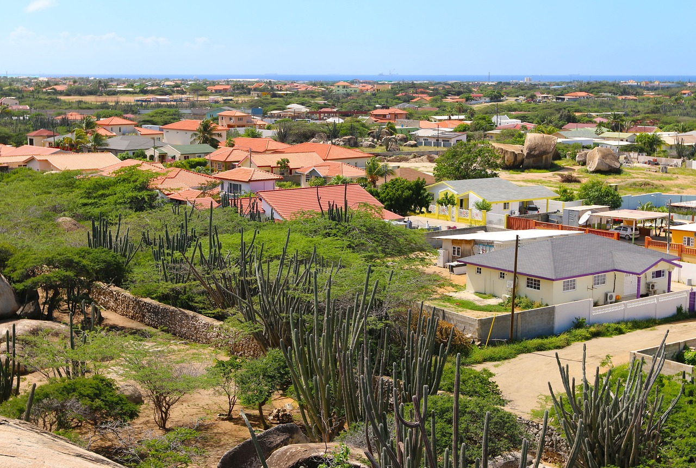

Aruba, a small yet vibrant island located in the southern Caribbean Sea, is renowned for its pristine beaches, crystal-clear waters, and sunny weather year-round. As one of the four constituent countries of the Kingdom of the Netherlands, Aruba enjoys a unique political and cultural identity, blending Dutch governance with a rich local heritage.
Geographically, Aruba is situated just 29 kilometers (18 miles) off the coast of Venezuela, strategically positioned at the crossroads of the Caribbean and South America. Despite its small size—32 kilometers (20 miles) in length and 10 kilometers (6 miles) in width—Aruba stands as a regional tourism hub, attracting millions of international visitors annually.
Aruba’s economy is driven by its booming tourism industry, but it also benefits from oil refining, aloe production, and a growing financial services sector. The island’s arid climate and distinctive cactus-dotted terrain distinguish it from the lush tropical islands around it.
Aruba’s population is ethnically diverse, a blend of Amerindian, African, and European ancestry. This cultural richness is reflected in the island’s two official languages, Dutch and Papiamento, as well as in its vibrant celebrations, such as the famous Carnival festival.
Historically, Aruba has evolved from a colonial settlement to a modern economic powerhouse with a stable political environment, a well-developed infrastructure, and a high Human Development Index (HDI), making it one of the most prosperous islands in the Caribbean.
This report aims to:
Present an overview of Aruba’s geographical, political, and economic context. - Analyze key demographic and economic indicators.
- Compare Aruba with other Caribbean island states.
- Conduct a SWOT analysis to explore Aruba’s strengths, weaknesses, opportunities, and threats.
2 Geographic Overview
Aruba is located 29 kilometers (18 miles) north of Venezuela in the southern Caribbean Sea. The island spans 32 kilometers (20 miles) in length and 10 kilometers (6 miles) in width, with a total area of 180 square kilometers (69.5 square miles). Aruba’s dry climate and arid landscape set it apart from the lush tropical islands around it.

2.1 Geographic Map of Aruba
The map below illustrates the key locations on the island, including Oranjestad (the capital), San Nicolas, and Palm Beach. These locations are important for understanding the island’s economic and tourism layout.
Code
# Install and load necessary package if not already installed# install.packages("leaflet")library(leaflet)# Define coordinates for Aruba's boundaries and major pointsaruba_boundaries <-list(northwest =c(12.6235, -70.0632), # Northwest corner of the islandsoutheast =c(12.4111, -69.8791) # Southeast corner of the island)# Define key points (cities) in Arubakey_points <-data.frame(name =c("Oranjestad (Capital)", "San Nicolas", "Palm Beach"),lat =c(12.510052, 12.4404, 12.5647),lng =c(-70.009354, -69.9181, -70.0457))# Create map for Aruba with major cities highlightedaruba_map <-leaflet() |>addProviderTiles(providers$OpenStreetMap) |>fitBounds(lng1 = aruba_boundaries$northwest[2], lat1 = aruba_boundaries$northwest[1],lng2 = aruba_boundaries$southeast[2], lat2 = aruba_boundaries$southeast[1] ) |>addMarkers(data = key_points, ~lng, ~lat, popup =~name) |>addLabelOnlyMarkers(data = key_points,~lng, ~lat,label =~name,labelOptions =labelOptions(noHide =TRUE, direction ='auto')) # Display the maparuba_map
This map shows the key locations in Aruba, highlighting important cities and the island’s boundaries.
2.2 Satellite Map of Aruba
Input to asJSON(keep_vec_names=TRUE) is a named vector. In a future version of jsonlite, this option will not be supported, and named vectors will be translated into arrays instead of objects. If you want JSON object output, please use a named list instead. See ?toJSON.
2.3 Global Map of Aruba’s Location
Aruba is strategically located in the southern Caribbean Sea. The following map provides a view of Aruba’s location in a global context.
Code
# Create a global map for Aruba's locationaruba_oranjestad <-c(12.510052, -70.009354) # Capitalaruba_san_nicolas <-c(12.4404, -69.9181) # San Nicolasaruba_palm_beach <-c(12.5647, -70.0457) # Palm Beach# Global map with zoom set for Arubaaruba_map_world <-leaflet() |>addProviderTiles(providers$Esri.NatGeoWorldMap) |>setView(lng = aruba_oranjestad[2], lat = aruba_oranjestad[1], zoom =9) |>addCircles(lng = aruba_oranjestad[2], lat = aruba_oranjestad[1],radius =10000, color ='#D90429', fillColor ='#D90429',fillOpacity =0.7, weight =2, dashArray ='5, 5',popup ="Oranjestad (Capital)") |>addCircles(lng = aruba_san_nicolas[2], lat = aruba_san_nicolas[1],radius =8000, color ='#134074', fillColor ='#134074',fillOpacity =0.7, weight =2, dashArray ='5, 5',popup ="San Nicolas") |>addCircles(lng = aruba_palm_beach[2], lat = aruba_palm_beach[1],radius =8000, color ='#F9C80E', fillColor ='#F9C80E',fillOpacity =0.7, weight =2, dashArray ='5, 5',popup ="Palm Beach")# Display the maparuba_map_world
The map above shows Aruba’s location relative to the world and highlights key cities.
3 Economic Data Analysis
In this section, we analyze key economic indicators for Aruba, specifically focusing on its Gross Domestic Product (GDP) and population growth. These indicators help evaluate Aruba’s economic performance over time.
To start, we retrieve Aruba’s GDP and GDP Growth Rate data from the World Bank using the wbstats package.
3.1Aruba GDP and GDP Growth Rate Over Time
This chart displays the economic performance of Aruba over the years, showing both the Gross Domestic Product (GDP) in current US dollars (in millions) and the annual GDP growth rate.
GDP (Million USD): The bar chart represents Aruba’s GDP for each year, with values scaled to millions of USD. The color gradient reflects the magnitude of GDP, where darker colors correspond to higher GDP values. We can observe steady growth in Aruba’s economy from 1990 to 1995, followed by fluctuations in later years.
GDP Growth Rate (Annual %): The line graph shows the annual percentage change in Aruba’s GDP. The secondary axis (on the right) measures the growth rate, which fluctuates over the years. Notably, we see a peak in GDP growth rate around the early 1990s, followed by a decline in certain years, reflecting the varying economic conditions during that period.
The chart highlights Aruba’s economic resilience, as it navigates through growth and contraction phases. The period of high growth in the early 1990s likely reflects strong economic activities in sectors such as tourism, oil refining, and services, while later periods show more moderate growth rates.
Attaching package: 'dplyr'
The following objects are masked from 'package:stats':
filter, lag
The following objects are masked from 'package:base':
intersect, setdiff, setequal, union
Code
ggplot() +# 绘制 GDP（单位：百万美元），使用条形图geom_col(data = aruba_data,aes(x = date, y = NY.GDP.MKTP.CD /10^6, fill = NY.GDP.MKTP.CD), color ="black") +# GDP 以百万美元为单位scale_fill_gradientn(colours =c("#03045E", "#012A4A", "#013A63", "#023E8A", "#014F86", "#277DA1", "#577590", "#4D908E", "#43AA8B", "#90BE6D", "#F9C74F", "#F9844A", "#DC2F02", "#D00000"),values =seq(0, 1, length.out =14)) +# 绘制 GDP 增长率（年增长率），使用线图geom_line(data = aruba_data,aes(x = date, y = NY.GDP.MKTP.KD.ZG *10+300), color ="#FFC300", linewidth =1, group =1) +# 调整 GDP 增长率的显示scale_y_continuous(sec.axis =sec_axis(~ . /10-30, name ="GDP Growth Rate (annual %)")) +# 副坐标轴用于GDP增长率# 添加标题和标签labs(title ="Aruba GDP and GDP Growth Rate Over Time", x ="Year", y ="GDP (million current US$)") +theme_minimal() +theme(plot.title =element_text(hjust =0.5),axis.text.x =element_text(angle =45, hjust =1),legend.position ="none" )
3.2Aruba GDP Per Capita and GDP Growth Rate Over Time
This chart presents the economic performance of Aruba from 1990 to 2022, focusing on both GDP per capita and GDP growth rate.
GDP Per Capita (thousand current US$): Represented by the bar chart, Aruba’s GDP per capita is scaled to thousands of current US dollars for clarity. A steady increase in GDP per capita can be observed in the early years, reflecting economic growth and development. However, fluctuations in the later years, particularly around the global financial crisis (2008–2009) and the COVID-19 pandemic (2020–2021), highlight the island’s economic vulnerability to global events.
GDP Growth Rate (Annual %): The line graph depicts the annual percentage growth in Aruba’s GDP, displayed on the secondary axis (right). The sharp dip in 2020 corresponds to the COVID-19 pandemic, which severely impacted global economies, including Aruba’s tourism-driven economy. The subsequent sharp recovery in 2021 indicates a rebound as global restrictions eased and tourism resumed.
Key Insights:
The data reflects Aruba’s reliance on external factors such as global tourism and trade for economic growth.
The strong rebound after economic crises demonstrates the resilience and adaptability of Aruba’s economy.
The fluctuations emphasize the importance of economic diversification to mitigate external shocks.
Code
ggplot() +# 绘制人均 GDP（单位：美元），使用条形图geom_col(data = aruba_data,aes(x = date, y = NY.GDP.PCAP.CD /10^3, fill = NY.GDP.PCAP.CD), color ="black") +# 人均 GDP 以千美元为单位scale_fill_gradientn(colours =c("#03045E", "#012A4A", "#013A63", "#023E8A", "#014F86", "#277DA1", "#577590", "#4D908E", "#43AA8B", "#90BE6D", "#F9C74F", "#F9844A", "#DC2F02", "#D00000"),values =seq(0, 1, length.out =14)) +# 绘制 GDP 增长率（年增长率），使用线图geom_line(data = aruba_data,aes(x = date, y = NY.GDP.MKTP.KD.ZG *10+300), color ="#FFC300", linewidth =1, group =1) +# 调整 GDP 增长率的显示scale_y_continuous(sec.axis =sec_axis(~ . /10-30, name ="GDP Growth Rate (annual %)")) +# 副坐标轴用于GDP增长率# 添加标题和标签labs(title ="Aruba GDP Per Capita and GDP Growth Rate Over Time", x ="Year", y ="GDP Per Capita (thousand current US$)") +theme_minimal() +theme(plot.title =element_text(hjust =0.5),axis.text.x =element_text(angle =45, hjust =1),legend.position ="none" )
3.3Aruba Inflation Rate (Consumer Prices, Annual %) Over Time
The chart depicts the annual inflation rate in consumer prices for Aruba from 1990 to 2022. Inflation is measured as the annual percentage change in the consumer price index (CPI). This measure reflects the rate at which the average price of goods and services in Aruba has increased or decreased each year.
Trends and Observations:
In the early 1990s, Aruba experienced moderate inflation rates, fluctuating between 4% and 6% annually. This indicates relatively stable price levels during that period.
A significant spike is observed around 2010, where inflation reached nearly 9%, likely caused by global economic factors such as the recovery from the 2008 financial crisis and commodity price fluctuations.
Post-2010, inflation rates dropped sharply, even entering a deflationary phase in certain years. Negative inflation rates indicate a decrease in consumer prices, which can be attributed to decreased economic activity or lower demand.
More recently, in the years following the COVID-19 pandemic, inflation rates have shown a sharp upward trend, reflecting the global economic recovery and supply chain constraints.
Key Implications:
The volatility in Aruba’s inflation rates highlights the island’s sensitivity to external economic shocks, including global financial crises and disruptions in international trade.
Managing inflation is critical for Aruba’s economy, given its reliance on imported goods and the potential impact of price volatility on consumer confidence and spending.
3.4Overall Insights
Aruba’s economic trajectory is closely tied to global trends, reflecting its reliance on tourism and imported goods. External shocks, such as global recessions and pandemics, have pronounced impacts on its economy.
Despite challenges, Aruba exhibits resilience, with a strong capacity for economic recovery and a stable GDP per capita over time.
Inflation trends underscore the importance of balancing price stability with sustainable growth, particularly in a small, open economy.
4 Social Data Analysis
4.1Population and Growth Rate Over Time
Code
# 假设你的数据框为 `population_data`，包含以下列：# - date: 年份# - SP.POP.TOTL: 人口总数 (Total Population)# - SP.POP.GROW: 人口增长率 (Population Growth Rate)# 绘制人口总数和人口增长率图表ggplot() +# 绘制人口总数（单位：百万），使用条形图geom_col(data = aruba_data,aes(x = date, y = SP.POP.TOTL /10^3, fill = SP.POP.TOTL), color ="black") +scale_fill_gradientn(colours =c("#023E8A", "#0077B6", "#0096C7", "#00B4D8", "#48CAE4", "#90E0EF"),values =seq(0, 1, length.out =6)) +# 绘制人口增长率，使用折线图geom_line(data = aruba_data,aes(x = date, y = SP.POP.GROW *10+300), color ="#FF6F61", linewidth =1, group =1) +# 副坐标轴：用于显示人口增长率scale_y_continuous(sec.axis =sec_axis(~ . /10-30,name ="Population Growth Rate (%)")) +# 添加标题和标签labs(title ="Aruba Population and Growth Rate Over Time",x ="Year",y ="Total Population (thousands)") +theme_minimal() +theme(plot.title =element_text(hjust =0.5, size =14, face ="bold"),axis.text.x =element_text(angle =45, hjust =1),legend.position ="none" )
4.2
The chart illustrates the trends in Aruba’s total population and population growth rate from 1990 to 2022. It provides insights into how Aruba’s population size and growth dynamics have evolved over the past decades.
Population Trends:
The bar chart represents the total population (scaled to thousands). Aruba’s population has shown steady growth from the early 1990s, reflecting consistent demographic expansion.
However, in recent years, population growth has plateaued, signaling a shift in demographic patterns. Factors like migration, birth rates, and economic shifts may contribute to this stabilization.
Population Growth Rate:
The line graph indicates the annual population growth rate. Aruba’s population growth has fluctuated significantly over time, with negative growth rates observed in recent years.
Sharp declines in growth rates suggest potential demographic challenges, such as emigration, lower birth rates, or economic factors affecting population retention.
4.2.1Key Observations:
Demographic Expansion: The steady increase in total population highlights Aruba’s ability to sustain demographic growth, likely supported by its robust tourism-driven economy.
Declining Growth Rate: The decline in population growth rate raises concerns about demographic sustainability. Persistent negative growth may affect the island’s labor force, economic productivity, and overall development.
Potential Challenges: Declining growth rates may point to broader socio-economic issues, such as limited economic opportunities, high emigration rates, or changing family structures.
Warning: Using `size` aesthetic for lines was deprecated in ggplot2 3.4.0.
ℹ Please use `linewidth` instead.
4.4
4.4.1Key Observations:
Steady Growth:
Life expectancy increased from 74 years in 1990 to over 78 years in 2022, reflecting improvements in healthcare and living standards.
Plateau Period:
Between 2010 and 2020, growth slowed, suggesting challenges like managing chronic diseases or economic pressures.
Pandemic Impact:
A slight decline in 2020 aligns with the COVID-19 pandemic, but subsequent recovery highlights Aruba’s resilience.
Aruba’s rising life expectancy showcases progress in public health and socio-economic development, but future efforts should address aging population needs and healthcare equity.
5 Comparative Analysis of Socio-Economic Indicators: Aruba, Bahamas, and Barbados
Understanding the socio-economic dynamics of small island nations is crucial for identifying their unique challenges and opportunities. This section provides a comparative analysis of key indicators for Aruba, Bahamas, and Barbados, focusing on their differences in economic performance, population trends, and social development.
The analysis aims to uncover distinct patterns across these nations, exploring disparities in GDP, population growth, life expectancy, and inflation. By highlighting these differences, the comparison seeks to provide insights into the varying trajectories of economic and social progress in the Caribbean region.
Bahamas consistently outperforms Aruba and Barbados in GDP per capita, highlighting its strong economic output relative to its population.
Aruba shows a stable upward trend but experienced a sharp dip during the 2020 pandemic, followed by recovery in 2022.
Barbados, while improving over time, lags behind the other two nations in GDP per capita.
Life Expectancy:
Barbados leads in life expectancy, surpassing both Aruba and Bahamas. This suggests higher standards of healthcare and living conditions.
Aruba maintains steady growth but has yet to match Barbados’s levels, indicating potential areas for improvement in healthcare.
Bahamas shows greater fluctuations, suggesting more volatile social or environmental factors impacting public health.
Population Trends:
Bahamas has the largest population among the three, with steady growth over time.
Barbados follows, with moderate growth, while Aruba has the smallest and most stable population, reflecting its limited geographic size and slower growth rate.
Multi-Indicator Comparison (2022):
Bahamas stands out in GDP-related metrics but shows weaker performance in life expectancy compared to Barbados.
Barbados excels in life expectancy but lags in GDP per capita.
Aruba, while balanced in certain indicators, reveals areas of improvement needed in GDP and population growth to compete with its regional peers.
5.2Key Takeaways
Each nation demonstrates strengths in specific areas: Bahamas in economic metrics, Barbados in social development, and Aruba in maintaining a balanced profile.
Strategic investments in healthcare and economic diversification could help Aruba enhance its competitiveness in the Caribbean region.
These findings emphasize the diverse trajectories of Caribbean nations and highlight the importance of tailored policies to address their unique challenges and opportunities.
6SWOT Analysis for Aruba
6.1Strengths:
Strategic Geographic Location:
Positioned at the crossroads of the Caribbean and South America, Aruba benefits from its proximity to major markets and trade routes.
Strong Tourism Industry:
Renowned for its white sandy beaches, sunny climate, and vibrant cultural heritage, Aruba attracts millions of international tourists annually, significantly boosting its GDP.
Political Stability:
As a constituent country of the Kingdom of the Netherlands, Aruba enjoys a stable political environment and access to Dutch legal and administrative support.
High Human Development Index (HDI):
Aruba boasts strong healthcare, education, and infrastructure systems, contributing to its high life expectancy and quality of life.
Cultural Diversity:
A multicultural population blending Amerindian, African, and European influences fosters social cohesion and global cultural appeal.
6.2Weaknesses:
Economic Dependence on Tourism:
Over-reliance on tourism makes Aruba vulnerable to global economic shocks, natural disasters, and pandemics, as evidenced during COVID-19.
Limited Natural Resources:
The island’s arid climate and small land area limit agricultural production and industrial diversification.
Environmental Vulnerability:
Rising sea levels and extreme weather events pose significant risks to Aruba’s coastal infrastructure and ecosystems.
Small Population and Market Size:
A limited population restricts the domestic market potential, increasing dependence on imports and external markets.
Relatively Low GDP Growth:
While stable, Aruba’s GDP growth rate has lagged behind regional peers like the Bahamas, indicating limited economic dynamism.
6.3Opportunities:
Renewable Energy Development:
Aruba’s sunny and windy climate presents excellent potential for expanding solar and wind energy production, reducing dependency on imported fuels.
Economic Diversification:
Opportunities exist to expand industries like financial services, technology, and healthcare tourism to reduce reliance on tourism.
Regional Collaboration:
Strengthening trade and policy collaborations with Caribbean nations could boost economic resilience and shared resource management.
Sustainable Tourism Initiatives:
Emphasizing eco-tourism and sustainable practices can attract environmentally conscious travelers while preserving natural resources.
Digital Transformation:
Leveraging digital technologies to enhance governance, education, and business operations can position Aruba as a tech-forward nation.
6.4Threats:
Climate Change:
Rising temperatures, more frequent hurricanes, and coastal erosion threaten Aruba’s tourism-dependent economy and natural habitats.
Global Economic Instability:
Economic downturns in major tourist source markets, such as the United States and Europe, could significantly impact visitor arrivals and revenue.
Competition from Regional Destinations:
Other Caribbean nations, like the Bahamas and Barbados, offer similar attractions, creating fierce competition for tourists and investments.
Aging Population:
An aging population could strain healthcare systems and social services while reducing the labor force.
Geopolitical Risks:
Political or economic instability in neighboring regions, such as Venezuela, could spill over and disrupt Aruba’s economy and security.


4 Social Data Analysis
4.1 Population and Growth Rate Over Time
Code
4.2
The chart illustrates the trends in Aruba’s total population and population growth rate from 1990 to 2022. It provides insights into how Aruba’s population size and growth dynamics have evolved over the past decades.
Population Trends:
The bar chart represents the total population (scaled to thousands). Aruba’s population has shown steady growth from the early 1990s, reflecting consistent demographic expansion.
However, in recent years, population growth has plateaued, signaling a shift in demographic patterns. Factors like migration, birth rates, and economic shifts may contribute to this stabilization.
Population Growth Rate:
The line graph indicates the annual population growth rate. Aruba’s population growth has fluctuated significantly over time, with negative growth rates observed in recent years.
Sharp declines in growth rates suggest potential demographic challenges, such as emigration, lower birth rates, or economic factors affecting population retention.
4.2.1 Key Observations:
Demographic Expansion: The steady increase in total population highlights Aruba’s ability to sustain demographic growth, likely supported by its robust tourism-driven economy.
Declining Growth Rate: The decline in population growth rate raises concerns about demographic sustainability. Persistent negative growth may affect the island’s labor force, economic productivity, and overall development.
Potential Challenges: Declining growth rates may point to broader socio-economic issues, such as limited economic opportunities, high emigration rates, or changing family structures.
4.3 Aruba Life Expectancy: Analysis
Code
4.4
4.4.1 Key Observations:
Steady Growth:
Plateau Period:
Pandemic Impact:
Aruba’s rising life expectancy showcases progress in public health and socio-economic development, but future efforts should address aging population needs and healthcare equity.